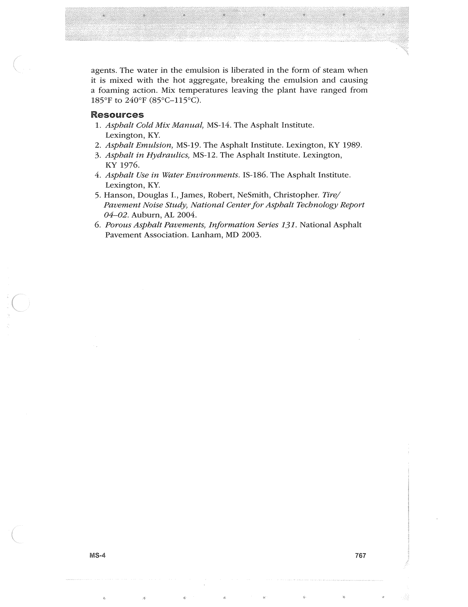

PDF page 801 · book page sequence 767


Searchable transcription
Unproofread OCR · 124 detected words; mean OCR confidence 94.39. Check technical values, symbols and table columns against the scan.
agents. The water in the emulsion is liberated in the form of steam when it is mixed with the hot aggregate, breaking the emulsion and causing a foaming action. Mix temperatures leaving the plant have ranged from 185°F to 240°F (85°C-115°C).
Resources 1. Asphalt Cold Mix Manual, MS-14. The Asphalt Institute. Lexington, KY. 2. Asphalt Emulsion, MS-19. The Asphalt Institute. Lexington, KY 1989. 3. Asphalt in Hydraulics, MS-12. The Asphalt Institute. Lexington, KY 1976.
4, Asphalt Use in Water Environments. 1S-186. The Asphalt Institute. Lexington, KY.
5. Hanson, Douglas I., James, Robert, NeSmith, Christopher. Tire/ Pavement Noise Study, National Center for Asphalt Technology Report 04-02. Auburn, AL 2004.
6. Porous Asphalt Pavements, Information Series 131. National Asphalt Pavement Association. Lanham, MD 2003.
MSs-4 767